sudoremove 라이브 토론 분석
RAG는 벡터 DB일까?다시 묻는 AI 개발 상식 4가지
오늘 바뀐 규정을 찾아야 할 때, GPU 메모리가 딱 한 단계 모자랄 때, 익숙한 설계도 다시 보인다. 2026년 말의 OX 토론에서 네 가지 선택의 근거를 꺼냈다.
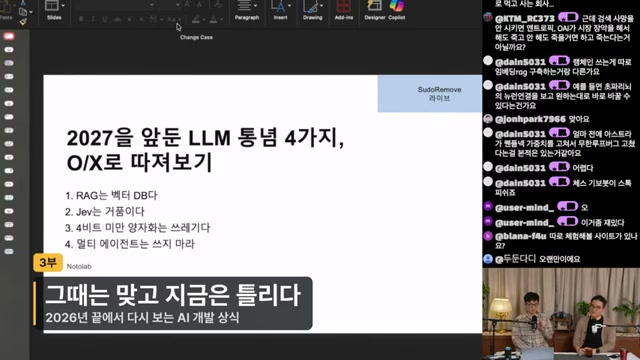
초록
검색에는 최신성과 접근 권한, 자동 분류에는 오판을 넘겨받을 절차가 중요하다. 양자화는 같은 메모리에서 끝낼 수 있는 과제로, 에이전트 분리는 나눈 뒤 얻는 효과로 평가해야 한다. 이 글은 진행자와 게스트가 어디에서 동의하고 무엇을 유보했는지, 방송 화면과 자막을 따라 정리한 보고다.
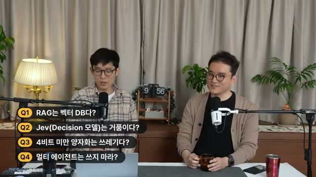
Q1 · 검색 증강 생성
오늘 바뀐 규정까지 찾아야 한다면
“중도상환수수료 면제 조건이 뭐야?” 가상의 금융사 문서 저장소에서 이 질문에 답하려면 면제 조항을 찾는 것만으로는 부족하다. 그 조항을 고친 공지가 있는지, 개정 내용이 언제부터 적용되는지도 알아야 한다.
방송의 에이전트는 먼저 rg -i "중도상환수수료" docs/로 규정 파일을 찾는다. 다음에는 rg -n "면제" docs/여신/여신업무규정.md -C 2로 조항 주변을 읽는다. 거기서 얻은 조문 번호로 rg -n "제38조" docs/공지/를 실행해 10월 1일 시행 공지에 닿는다. 첫 검색 전에는 몰랐던 ‘제38조’가 마지막 검색어가 된다는 점이 이 예시의 핵심이다.
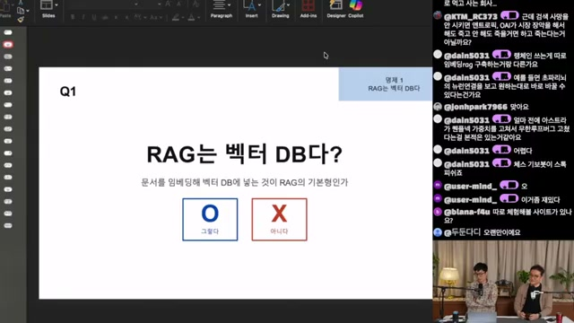
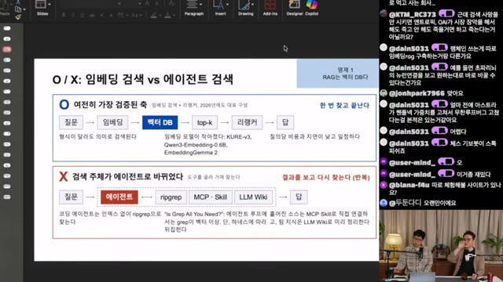
슬라이드의 임베딩 검색 경로질문 → 임베딩 → 벡터 DB → 상위 k개 후보 → 리랭커 → 답변
슬라이드의 에이전트 검색 경로질문 → 에이전트 → ripgrep 또는 연결된 소스 검색 → 결과 확인 → 필요하면 새 질의 → 답변
두 경로는 조합할 수 있다. 에이전트도 의미가 비슷한 문서를 찾을 때 벡터 검색을 호출할 수 있다. 슬라이드는 임베딩 모델로 KURE-v1, Qwen3-Embedding-0.6B, EmbeddingGemma 2를 든다. 반대로 코드 식별자나 조문 번호처럼 정확한 문자열이 생기면 ripgrep이 자연스러운 선택이다.
| 운영 기준 | 별도 벡터 인덱스 | 에이전트의 소스 직접 조회 |
|---|---|---|
| 최신성 | 변경분을 색인한 뒤 반영 | 조회 시점에 소스가 제공하는 상태를 읽음 |
| 권한 | 원문의 접근 권한 변경을 색인에도 반영 | 사용자 자격으로 조회하면 원본 서비스가 판단 |
| 데이터 사본 | 검색용 사본의 보관·삭제 필요 | 별도 검색 인덱스용 사본 불필요 |
| 질의 비용·지연 | 단일 조회 경로에서 낮고 일정한 편 | 반복 횟수와 소스 응답에 따라 변동 |
| 통합 순위 | 여러 소스의 후보를 함께 정렬하기 유리 | 소스별 결과의 순위를 합치는 작업 필요 |
08:05 슬라이드의 비교를 재구성했다. 최신성과 권한에 관한 설명은 연결 도구가 현재 원본을 사용자 자격으로 조회하는 구성을 전제로 한다.
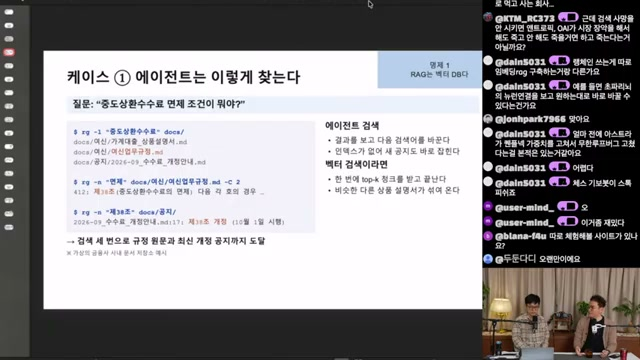
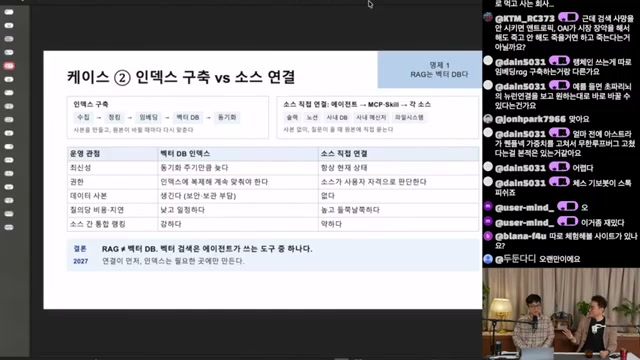
“연결이 먼저, 인덱스는 필요한 곳에만 만든다.”검색 장의 2027년 전망 · 08:05 슬라이드
두 사람의 무게중심은 조금 다르다. 게스트는 코드에서의 grep 경험을 일반 문서까지 확대하기 어렵다고 본다. 진행자는 큰 모델의 질의 재구성 능력을 높게 보면서도 비용과 지연을 인정한다. 토론에서 벡터 검색의 강점이 남는 예로 든 영역은 표현이 다른 문서의 의미 검색과 멀티모달 검색이다. 지속 학습과 망각 학습이 검색 수요를 줄일 수 있다는 발언은 장기 전망에 해당한다.
Q2 · Decision 모델
환불 문의 한 건에서 Jev가 맡을 일
고객이 환불을 요청했다. 답장을 쓰기 전에 서비스가 내려야 할 결정이 있다. 어느 팀이 맡을지, 작은 모델로 처리할 수 있을지, 어떤 규정을 답변에 첨부할지다. 방송이 소개한 Decision 모델의 입력은 상황(state)과 미리 정한 질문들(questions)이다. 출력은 선택지, 점수, 예·아니오 같은 정해진 형식의 값과 그에 대한 확률이다.
슬라이드 예시에서 ‘환불·취소’의 확률은 0.81이다. 운영자가 정한 임계값을 넘으면 자동 처리하고, 모호하면 사람이나 상위 모델에 넘기는 식으로 쓸 수 있다. 0.81은 예시 출력값이다. 실제 문의 100건 중 81건을 맞힌다는 검증 결과로 읽을 수는 없다.
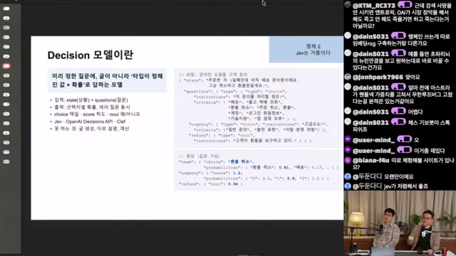
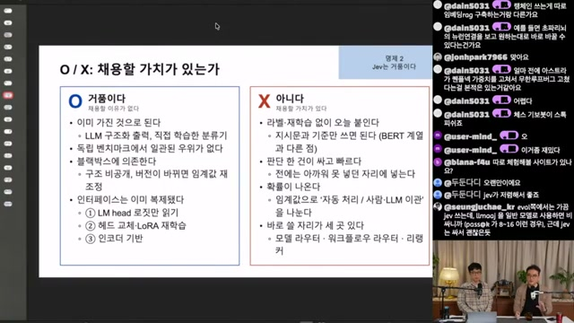
같은 판단 모델도 맡는 자리에 따라 평가가 달라진다
- 워크플로우 라우터. 문의 유형을 골라 환불 절차로 보낸다. 잘못된 부서로 간 비율과 사람이 다시 분류한 건수가 판단 근거가 된다.
- 모델 라우터. 난이도를 점수화해 작은 모델 또는 큰 모델로 보낸다. 슬라이드의 경계값은 2다. 진행자는 쉬운 요청을 저렴하게 처리할 수 있는 이 자리를 가장 유망하게 봤다.
- 리랭커. 후보 문서마다 질문과 관련 있을 확률을 구해 상위 문서를 전달한다. 진행자는 전문 지식이 필요한 문의에서 범용 판단 모델이 기존 리랭커를 대신할 수 있을지 유보했다.
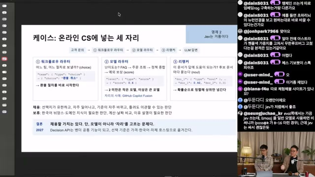
대안은 이미 있다. LLM의 구조화 출력이나 기존 분류기를 쓸 수 있고, 언어 모델의 출력 로짓을 읽거나 헤드를 교체해 학습하는 방법도 거론됐다. 전용 모델의 독립 벤치마크 우위가 일관되지 않다는 비판과, 라벨 수집 없이 짧은 지시만으로 첫 버전을 붙일 수 있다는 주장이 맞섰다.
게스트는 가격 차이가 오래갈지 의심했다. 오히려 응답 시간의 여유가 작은 온디바이스 환경, 사람의 매회 확인 없이 다음 절차를 골라야 하는 환경에 관심을 뒀다. 학습 방식이 공개되지 않아 자율 처리에서의 우위를 평가하기는 어렵다는 단서도 붙였다.
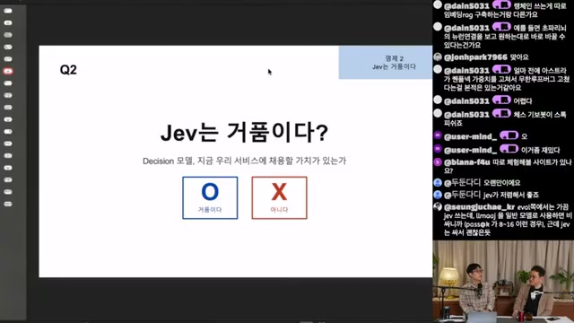
Q3 · 저비트 양자화
원본과 95% 일치하면 일을 얼마나 잘할까?
진행자가 멈춰 세운 곳은 양자화 그래프의 세로축이었다. 방송 설명에 따르면 여기서 측정한 값은 같은 입력에서 양자화 모델과 16비트 원본이 다음 토큰으로 같은 후보를 1위에 놓은 비율이다. ‘하지만’이 ‘그러나’로 바뀐 경우와 ‘그래서’로 바뀐 경우가 모두 불일치 한 건이다. 뒤의 문장을 생성할 때 두 변화의 효과는 크게 달라질 수 있다.
Top-1 토큰 일치율두 모델의 1위 예측 토큰이 같은 평가 위치 수 ÷ 전체 평가 위치 수 × 100 (%)
게스트는 Qwen 계열 27B GGUF 그래프에서 레이어별 비트 수를 달리한 Unsloth Dynamic이 4비트까지 약 95% 이상을 유지하고 3비트도 그 경계에 가깝다고 읽었다. 이는 양자화 방식끼리 손상 정도를 비교하는 근거다. 서비스의 정답률이나 코드 수정 성공률은 별도로 측정해야 한다.
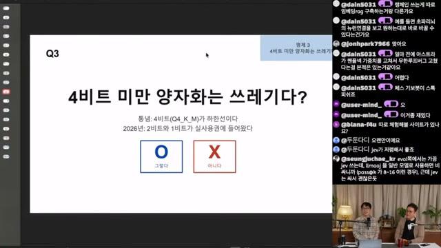
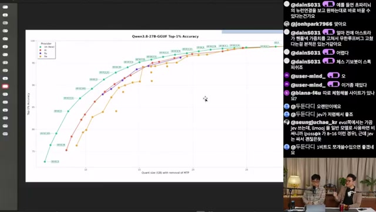
코딩 벤치에서 버틴 3비트, 난도가 올라갈 때의 손실
다음 화면은 LiveCodeBench v6, Terminal Bench 2.1, DeepSWE v1.1의 과제 성능으로 시선을 옮긴다. 비교 대상은 Unsloth V3.1·V3, GSQ-RCO(ISTA), Exllama-3-SC다. 게스트는 코딩 과제로 캘리브레이션한 27B의 3비트 결과에 실용 가능성이 있다고 해석했다. 쉬운 문제와 어려운 문제의 성능 손실은 달랐고, 2비트에서는 출력이 반복되는 현상도 언급됐다.
GPU가 고정돼 있다면 선택지는 ‘같은 모델의 3비트와 4비트’에서 끝나지 않는다. 더 큰 모델을 3비트로 줄여 긴 입력을 위한 메모리를 남기는 방법도 있다. 이때 비교해야 할 두 후보는 같은 장비에서 목표 컨텍스트 길이를 감당하는 작은 4비트 모델과 큰 3비트 모델이다.
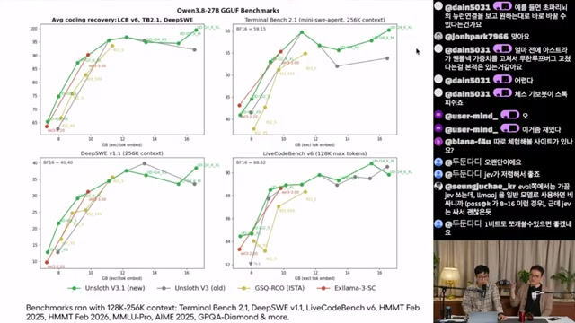
1.58비트와 4비트 학습 사례의 근거 범위
방송에서 ‘1비트’로 부른 사례의 가중치는 {−1, 0, 1} 세 값이다. 세 가지 상태의 정보량은 log2(3) ≈ 1.585비트다. 게스트는 이런 27B 모델이 수학 과제에서 원래 성능의 약 80%를 유지하고 스마트폰에 들어간다는 사례를 소개했다. 이 수치는 수학 과제에 관한 구두 설명이며, 모델명과 제작사 철자, 실제 기기 조건은 원문과 대조되지 않았다.
이어 진행자는 약 500~600B 모델을 NVFP4로 사전학습해 약 3일 만에 마쳤다는 사례를 들었다. 방송에서 설명한 정밀도는 스케일 정보를 포함해 약 4.25비트다. 이 대목은 추론용 모델을 줄인 앞선 실험과 구분해야 한다. 학습 때의 정밀도를 낮추면 생기는 손실을 같은 연산 자원에서 늘어난 모델 규모나 학습량으로 상쇄할 수 있느냐는 별도 질문이다. 모델명과 학습 조건은 확인되지 않았다.
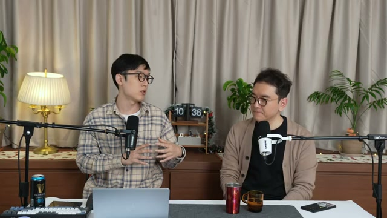
Q4 · 멀티 에이전트
코드를 쓴 모델과 검토할 모델은 나눌 만하다
요구사항 담당이 설계 담당에게 요약을 건네고, 설계 담당이 코딩 담당에게 다시 요약을 건넨다. 테스트가 실패했을 때 처음의 제약 조건을 기억하는 에이전트는 누구일까? 방송이 사람 조직도를 본뜬 구조에서 지적한 문제다. 각 단계가 자기 몫을 잘 끝내도 전체 결과를 책임질 맥락이 사라질 수 있다.
영상에서 소개한 가이드는 스킬과 도구를 갖춘 단일 에이전트를 출발점으로 삼는다. 반면 커뮤니티 반론이 든 예는 Claude Code가 구현하고 Codex가 검토하는 구성이다. 두 모델의 역할을 구분하는 데에는 구현자가 지나친 오류를 별도의 검토자가 발견할 수 있다는 구체적인 기대가 있다.
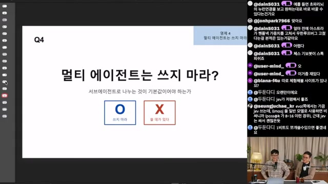
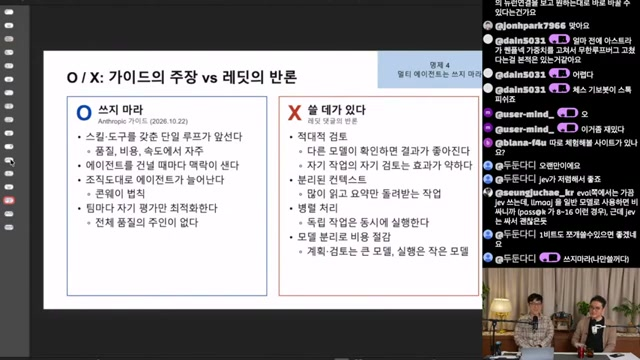
먼저 한 루프로 합치는 방법
슬라이드의 개편안에서는 코딩 에이전트 하나가 작업을 끝까지 맡는다. 테스트 작성 규칙과 배포 절차는 필요할 때 읽는 스킬로, 검색·테스트 실행·git·이슈 조회는 호출할 수 있는 도구로 둔다. 항상 연달아 실행되는 서브에이전트부터 하나씩 합치고 같은 평가 과제로 결과를 확인한다. 코드베이스 탐색이나 별도 모델의 리뷰는 분리 효과가 있을 때 남긴다.
그래도 분리할 이유 다섯 가지
- 읽을 자료가 너무 많을 때. 별도 에이전트가 대량 탐색을 하고 메인에는 판단에 필요한 근거와 요약을 돌려준다.
- 작업이 독립적일 때. 서비스 10개의 개별 점검처럼 서로의 답을 기다릴 필요가 없는 작업을 동시에 수행한다.
- 권한이나 지침이 충돌할 때. 고객 응대 도구에서는 사내 재무 데이터에 접근할 수 없도록 실행 권한을 구분한다.
- 독립된 검토가 필요할 때. 구현에 참여하지 않은 모델에 블라인드 리뷰나 테스트 설계를 맡긴다.
- 모델별 비용 차이를 활용할 때. 큰 모델이 계획·검토를, 작은 모델이 반복 실행을 맡고 이관 비용까지 포함한 총비용을 비교한다.
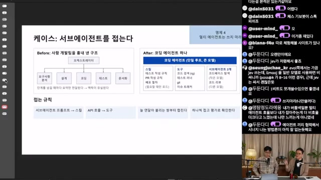
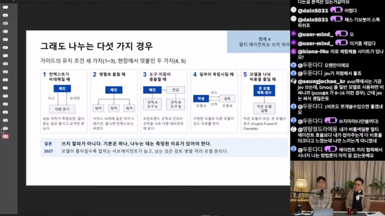
“기본은 하나, 나누는 데는 측정된 이유가 있어야 한다.”서브에이전트 유지 조건을 정리한 슬라이드 · 32:09
진행자가 실제 운영에서 가장 분명하게 남긴 경계는 권한이었다. 여러 작업자가 필요할 때에는 칸반 보드처럼 누가 무슨 일을 맡았는지 사람이 추적할 수 있는 방식에 무게를 뒀다. 두 사람은 에이전트끼리 자유롭게 토론시키면 서로의 오류에 동조할 수 있다고 봤다. 여러 결과를 독립적으로 만든 뒤 하나를 고르는 best-of-N은 그와 다른 협업 방식이다.
마지막 시청자 질문은 독립 검토의 한계까지 드러냈다. 반대 의견을 요구하면 모델이 오류를 다시 살피지만, 멀쩡한 답을 고칠 때도 있다. 리뷰 건수만 세면 두 경우가 모두 성과로 잡힌다. 효과를 알려면 발견한 결함과 리뷰 때문에 새로 생긴 결함을 함께 기록해야 한다.
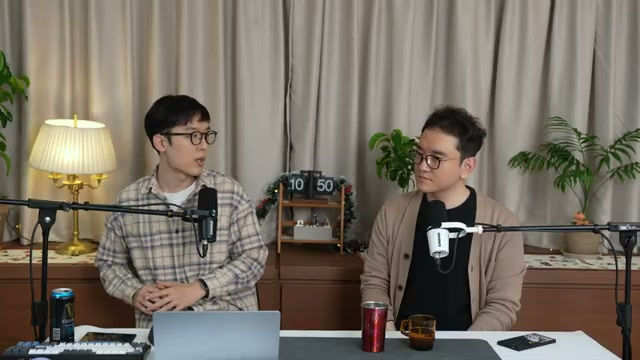
실무 시사점
다음 설계 회의에 가져갈 네 가지 질문
토론의 판단을 자기 서비스로 옮기려면 대표 업무 하나와 실패 사례 하나가 필요하다. 같은 조건에서 두 구성을 실행한 뒤, 어느 실패가 줄었고 얼마가 들었는지 확인할 수 있다.
- 검색 — 최신 개정 공지까지 찾아야 하는 질의에서 정답 문서 도달률, 권한 준수, 응답 시간은 각각 어떤가?
- 라우팅 — 자동 처리 임계값을 움직일 때 잘못 처리한 건수와 사람에게 넘어가는 건수는 어떻게 달라지는가?
- 양자화 — 같은 GPU와 입력 길이에서 작은 4비트 모델과 큰 3비트 모델 중 어느 쪽이 어려운 과제를 더 많이 끝내는가?
- 에이전트 분리 — 독립 리뷰가 실제 결함을 얼마나 더 찾았으며 추가 비용, 대기 시간, 불필요한 수정은 얼마인가?
자료와 판독 한계
방송과 증거의 범위
이 글은 sudoremove의 2026년 11월 20일 라이브 3부(37분 54초, 2,274초)를 분석한 원노트를 편집한 것이다. 근거는 영상 메타데이터·설명란·챕터, 한국어 자동 생성 자막(ko-orig), 영상 프레임 23장이다. 수동 자막은 없었다. 방송에서 소개한 연구와 제품에 관한 발언은 출연자의 설명으로 귀속했다. 원본 영상 · sudoremove 채널
23장의 화면을 고른 방법
원노트 작성자는 ffmpeg 장면 전환 검출(임계값 0.25)로 전환점 232개를 찾고, 15초 간격으로 만든 컨택트시트 8장을 육안 검토했다. 챕터 경계 근처의 안정 구간을 우선했고, 짧게 나타나는 슬라이드는 1초 간격으로 다시 추출했다. 이 영상에서는 휘도 표준편차가 슬라이드 약 103, 인물 화면 약 50으로 달라 후보를 좁히는 단서가 됐다.
원노트에 기록된 후보의 평균 휘도 범위는 108~200이다. 픽셀 검사로 흑화면을 확인하고, 16×9로 축소한 이미지 간 차분과 육안 검토로 유사한 와이드샷 2장과 토킹헤드 2장을 제거했다. 최종 선정분은 슬라이드 17장과 인물 화면 6장이다.
읽을 수 있었던 것과 남은 불확실성
원노트에 따르면 1080p DASH(399+140) 다운로드는 HTTP 403으로 실패했고 tv와 web_safari 클라이언트도 실패했다. 로그인 쿠키 없이 mweb으로 받은 파일은 약 70MB의 640×360 영상(포맷 18)이다. 슬라이드 제목과 큰 도식은 읽을 수 있지만 그래프의 작은 눈금, 데이터 라벨, 코드 일부는 선명하지 않다.
Jev, Unsloth, ripgrep, EmbeddingGemma 2, NVFP4는 원노트가 화면이나 설명란을 우선해 정리한 표기를 따랐다. 1.58비트 모델과 제작사의 철자, 일부 라우팅 제품명은 불확실하다. ‘Is Grep All You Need?’로 언급된 연구, 1.58비트 모델과 NVFP4 학습 사례, Anthropic 가이드는 원문 대조를 거치지 않았다. 본문의 벤치마크 해석과 2027년 전망은 이 근거 범위 안에서 읽어야 한다.